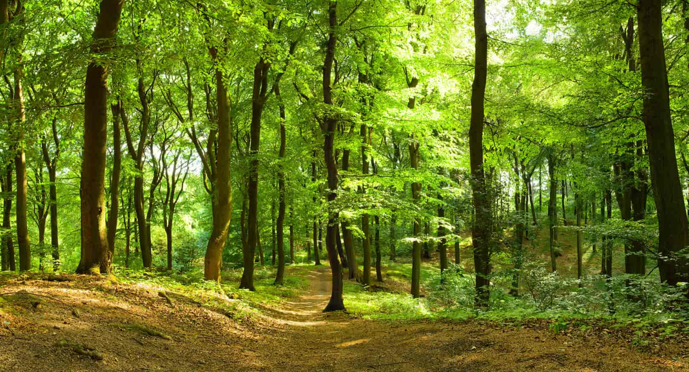
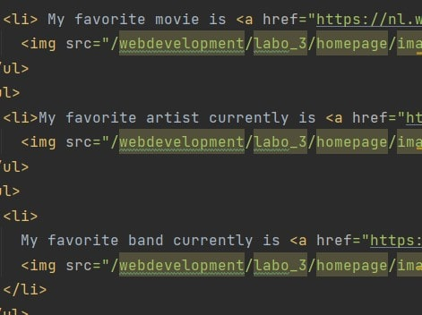

Opdracht 2
- Naarmate je de kwaliteit verminderd van de foto's, verminderd de bestandgrootte en kwaliteit zelf van de foto.
- Je ziet vooral het verschil in de bladeren, hoe scherp ze zijn etc.

- Je begint zeer subtiel te merken dat de tekst niet meer zo 'wit' is dan het origineel, er is meer gruis op.
